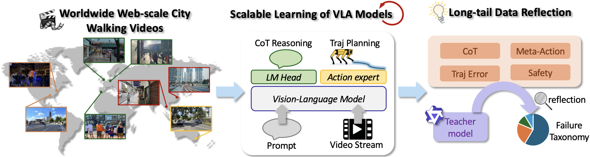
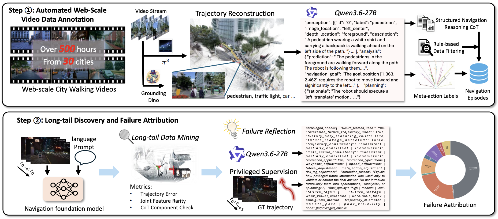
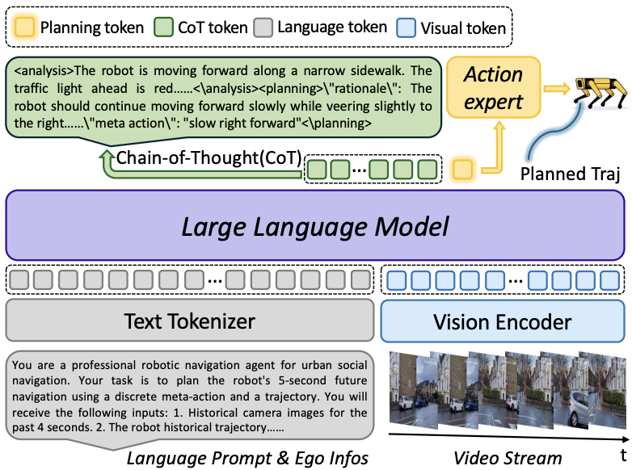
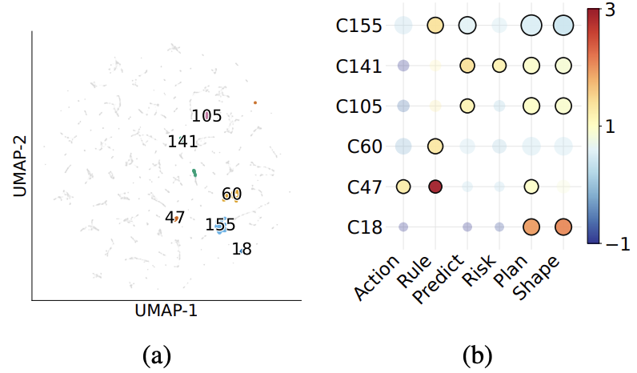
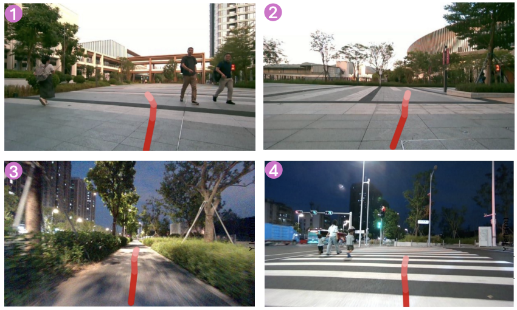

Learning embodied urban navigation policies from real-world data is constrained by the cost of task-specific data collection and the limited coverage of rare yet safety-critical scenarios. To address these challenges, we present a scalable framework for learning point-goal urban navigation from webscale in-the-wild egocentric videos while systematically exposing its long tail. The framework automatically annotates uncurated web videos with metric trajectories and structured navigation semantics, which are then used to train a visionlanguage-action policy for interpretable navigation planning. We characterize the long tail based on model performance and the distribution of perception–motion patterns, and employ reflection-based analysis to diagnose recurring failure modes. Experiments on web-video data and real-world urban navigation tasks demonstrate effective knowledge transfer from unconstrained videos and reveal coherent long-tail structures beyond aggregate navigation performance.

Overview of the proposed framework for scalable urban navigation VLA models. Our approach first collect worldwide web-scale street-walking videos as the dataset. A VLA model is then trained to perform end-to-end urban navigatioin planning. Finally, the reflection driven by a teacher model is introduced to analyze failure taxonomies.

The two-stage pipeline for automated video processing. Step 1 illustrates the annotation process consisting of Qwen3.6VL-27B and other visual foundation models. Step 2 depicts the long-tail data analysis process. Long-tail samples are defined using distributional rarity and model-dependent trajectory error, and a teacher model performs reflective reasoning for structured failure attribution.

Detailed architecture of the proposed WILD-Nav model. It processes temporal video streams through a vision encoder, while a Large Language Model backbone processes the fused tokens to generate CoT reasoning. Finally, the action expert decodes the planning token into a trajectory.

Failure attribution obtained by privileged reflection over the hard set. (a) Visualization of six representative HDBSCAN clusters in the hard set; gray points denote all remaining samples. (b) Cluster-specific reflection failure patterns. Bubble size represents failure support, and color indicates enrichment over the global baseline.

Real-world navigation performance of our VLA model. Our model generates safe and reasonable trajectories (red) for various navigation tasks.
BibTex Code Here